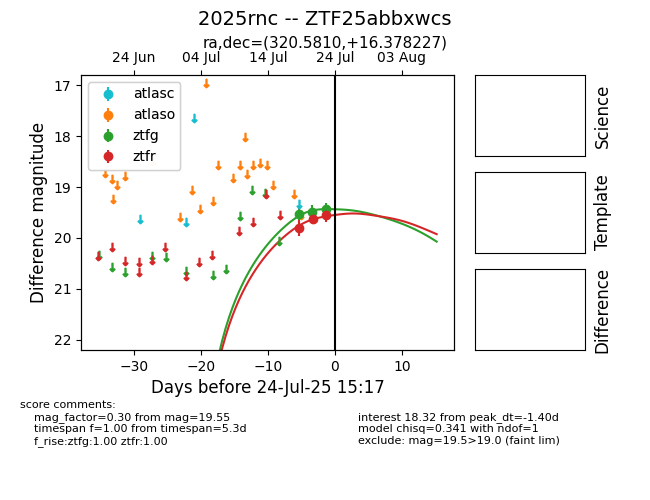

Target 2025rnc at 2025-07-24 15:17, see:
FINK: fink-portal.org/2025rnc
Lasair: lasair-ztf.lsst.ac.uk/objects/2025rnc
ALeRCE: alerce.online/object/2025rnc
TNS: wis-tns.org/object/2025rnc
YSE: ziggy.ucolick.org/yse/transient_detail/2025rnc
alt names
ZTF25abbxwcs (ztf,fink)
2025rnc (tns,yse)
coordinates:
equatorial (ra, dec) = (320.5810,+16.37823)
galactic (l, b) = (67.2800,-23.19388)
photometry
last ztfg=19.44, ztfr=19.55
3 ztfg, 3 ztfr detections
